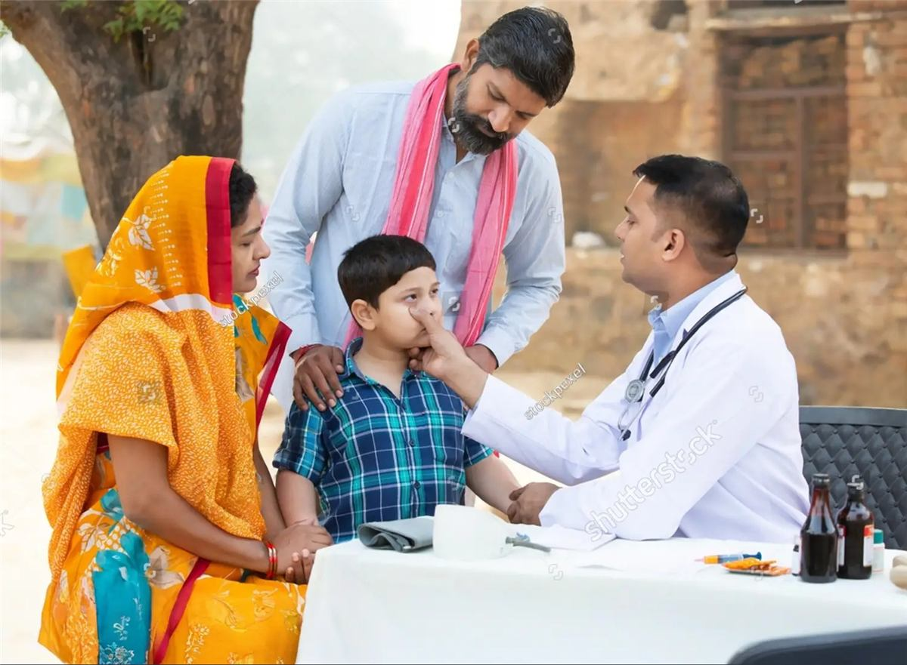

Core programme
Health · Schedule VII (i)
Free Cataract Surgery
Cataract is the leading cause of avoidable blindness. We perform free sight-restoring surgeries for poor patients — modern SICS or PHACO with a lens implant — including transport, medicines and follow-up.
6,254free surgeries in 2025–26 · goal 10,000 a year